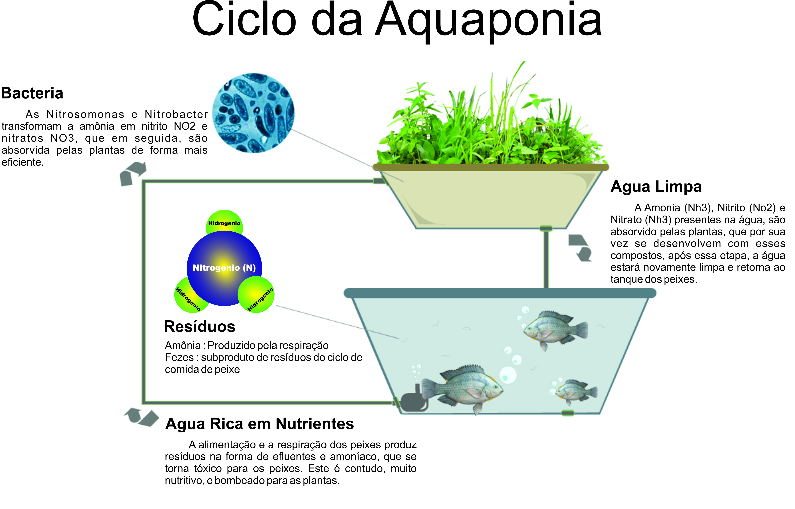
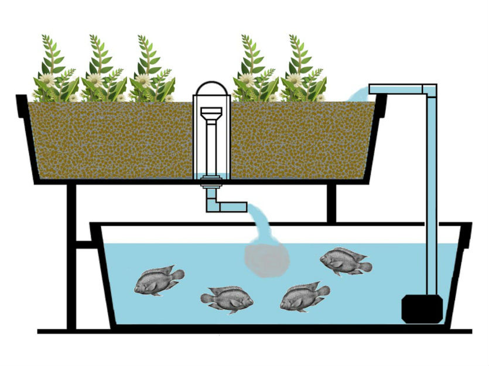

Uma Abordagem Sustentável para a Produção Integrada de Alimentos
A aquaponia é um sistema inovador de produção de alimentos que combina aquicultura (a criação de organismos aquáticos, como peixes) e hidroponia (o cultivo de plantas em solução aquosa, sem o uso de solo). Este sistema representa um ecossistema simbiótico em miniatura que explora as vantagens de ambos os métodos, minimizando suas respectivas desvantagens.
Funcionamento Básico:
No sistema de aquaponia, a água dos tanques de peixes, rica em excrementos e resíduos orgânicos, é filtrada e depois direcionada para os canteiros de plantas. Esses resíduos, que em um ambiente de aquicultura tradicional seriam tóxicos para os peixes se acumulados, são convertidos por bactérias benéficas em nutrientes essenciais para o crescimento das plantas. Após a absorção desses nutrientes, a água é então recirculada de volta para os tanques de peixes, agora purificada e livre de toxinas nocivas.
 Vantagens:
- Eficiência Hídrica: A aquaponia usa significativamente menos água do que métodos agrícolas tradicionais, uma vez que a água é reciclada continuamente.
- Produção Sustentável: Com a eliminação do uso de fertilizantes químicos e a minimização do desperdício de água, a aquaponia é uma abordagem ecológica para a produção de alimentos.
- Cultivo Intensivo: Em um espaço limitado, é possível produzir uma grande quantidade de alimentos, tanto vegetais quanto proteínas aquáticas.
Embora a aquaponia ofereça muitos benefícios, também há desafios a serem considerados. O equilíbrio do sistema é crucial; perturbações, como alterações bruscas na temperatura ou na química da água, podem afetar negativamente tanto as plantas quanto os peixes. Além disso, o custo inicial de instalação pode ser elevado, e há uma curva de aprendizado associada à gestão adequada do sistema.
A aquaponia emerge como uma solução promissora para os desafios contemporâneos da segurança alimentar e da sustentabilidade agrícola. Combinando a produção de peixes e plantas em um único sistema integrado, oferece uma abordagem eficiente e ecologicamente correta para a produção de alimentos, apresentando uma alternativa viável ao cultivo tradicional, especialmente em regiões com escassez de água ou solo de baixa qualidade.